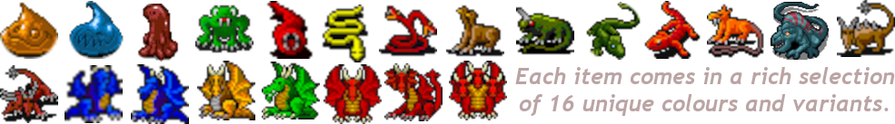

BLUEBERRY
This game uses the newest GPL license. The GPLv3 license includes a strong "NO WARRANTY" clause and a "LIMITATION OF LIABILITY" clause. Essentially, it states that the software is provided "as is" without any warranty, and the copyright holders and anyone distributing the software are not liable for any damages, including general, special, incidental, or consequential damages, arising from the use or inability to use the program. This means users are responsible for their own use of the software and any consequences that may arise. This is mainly here to avoid problems with hackers who change the release. Here is the license text.
AGREE to LICENSE:
Download the most recent release from the list
The release files can be found under Assets. On Windows and macOS, extract the .zip archive and launch the game. On Linux, simply run the .AppImage file. On Ubuntu Linux, you might just need to install libfuse2, then run your AppImage with ./*.AppImage --no-sandbox and you’re good to go. Ready to dive in? Here’s your tutorial!

This is the original version on GitHub. Any derivatives must be clearly identified as such. The game title Drakenhak Blueberry was officially acquired on 2026-03-23. [2] What's new? Progress is happening, just in that unhurried, no‑stress kind of way. 2026-08-26 Options window ready and some new graphics. 2026-08-25 Took a long pause. Console window working now. 2026-04-16 Version 0.1.0 released! 2026-04-16 You can now scoop up fish and whisk them around the world. 2026-04-15 Your voice is restored, resonating clearly again. You may speak with the others now, and they, too, have awakened into motion. 2026-04-14 Players can now reposition butterflies, and additional map areas are available. Daily development progress remains modest as I'm taking things at a relaxed pace. 2026-04-12 Version 0.0.7 released! 2026-04-12 Moving around the map, saving and loading. 2026-03-21 Dragon evolution 2026-03-20 Website graphics 2026-03-18 Website Old entries